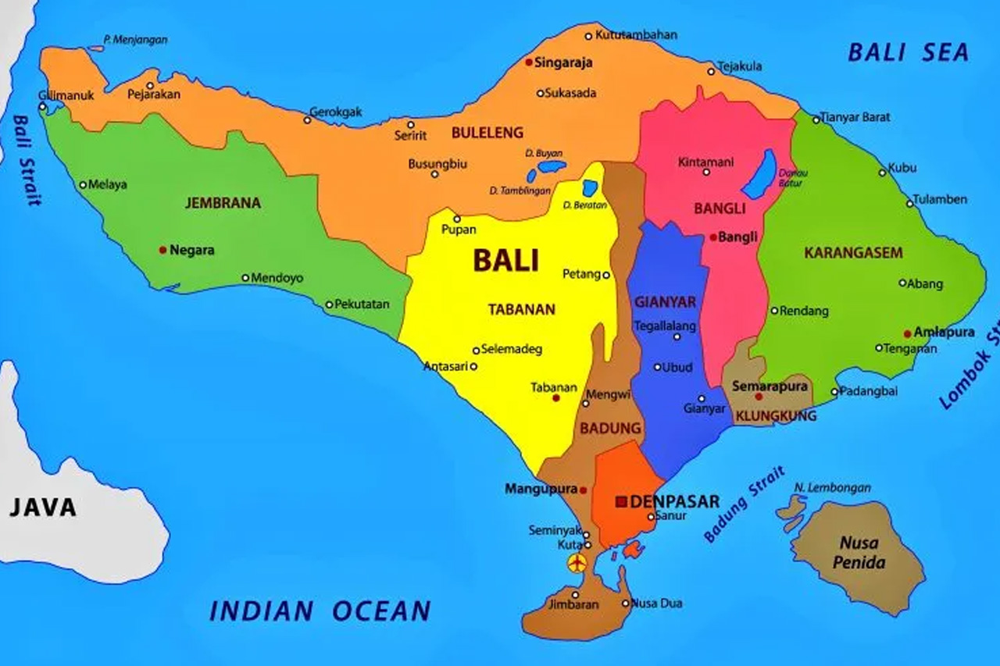
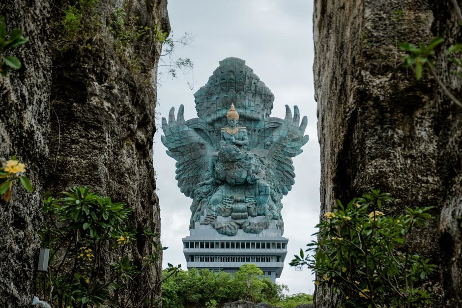
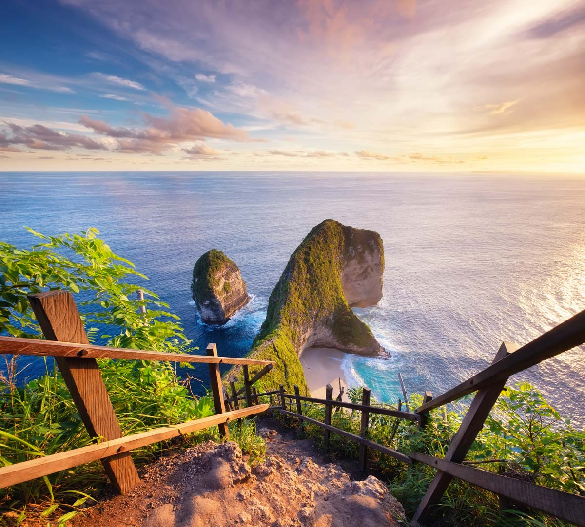

Sejarah

Pada abad ke-9, Bali mulai mendapat pengaruh Hidu dari India, dibawa oleh para pedagang dan pengajar
Bali kemudian berkembang sebagai pusat kebudayaan Hindu di Indonesia. Kerajaan-kerajaan Hindu-Buddha
yang kuat,seperti kerajaan Majapahit di jawa,juga mempengaruhi Bali. Setelah jatuhnya majapahit,banyak
seniman dan bangsawan Hindu yang melarikan diri ke Bali,memperkuat tradisi Hindu di pulau ini. Meskipun
pernah dijajah oleh Belanda dan Jepang, Bali tetap mempertahankan identitas budayanya yang kuat hingga kini.
Geografis

Secara geografis, Bali terletak di antara pulau jawa di sebelah barat dan pulau Lombok
disebelah Timur, dengan luas wilayah sekitar 5.780km2. Bali termasuk dalam provinsi
Bali,yang terdiri dari satu pulau utama dan beberapa pulau kecil di sekitarnya,seperti Nusa Penida
Nusa Lembongan dan Nusa Ceningan. Topografi Bali sangat beragam,dengan bentang alam yang terdiri dari
pantai,pegunungan,dan dataran rendah. bagian tengah pulau ini didominasi oleh pegunungan vulkanik
dengan puncak tertinggi adalah Gunung Agung(3.031meter),yang dianggap suci oleh masyarakat Bali. Gunung
ini adalah gunung berapi aktif dan sering menjadi latar belakang penting dalam budaya dan agama di Bali.
Pantai di Bali terbentang dari utara ke selatan. Di bagian selatan,seperti di kuta,sanur Nusa Dua, pantai
berpasir putih populer untuk pariwisata dan aktivitas selancar. Sementara di utara,pantai-pantai seperti
Lovina memiliki pasir hitam yang terbentuk dari aktivitas vulkanik.
Sungai-sungai seperti Sungai Ayung dan Sungai Telaga Waja juga melintasi Bali,memberikan sumber air penting
untuk irigasi dan mendukung sistem sawah subak yang terkenal di Bali,sebuah warisan budaya yang diakui oleh
UNESCO.
Bali juga memiliki iklim tropis, dengan dua musim utama: musim hujan(Oktober hingga Maret) dan musim kemarau(April
hingga September). Suhu rata-rata di Bali berkisar antara 24oC hingga 30oC sepanjang tahun.
Wisata
Bali memiliki banyak sekali tempat wisata yang bisa dikunjungi
tetapi hanya beberapa destinasi wisata yang bisa saya paparkan pada website
saya kali ini, dan pasti teman-teman sudah pernah mengunjungi tempat wisata yang akan
saya paparkan ini. Berikut!
Pura Luhur Lempuyang

Pura Luhur Lempuyang adalah salah satu pura tertua dan paling suci di Bali. Terletak di Gunung Lempuyang, disebelah
timur Bali pura ini terkenal dengan gerbangnya yang dikenal dengan "Gerbang Surga". Dari sini,pengunjung bisa melihat
pemandangan Gunung Agung yang megah di kejauhan. Untuk mencapai puncak pura, pengunjung harus mendakii lebih dari
1.700 anak tangga, menjadikannya juga sebagai tempat spiritual dan perjalana ziarah bagi umat hindu.
Garuda Wisnu Kencana

Garuda Wisnu Kencana adalah taman budaya yang berada di bagian selatan Bali, di bukit ungasan. Taman ini terkenal,
dengan patung raksasa Dewa Wisnu yang sedang menungggangi burung mitologi Garuda. Patung ini memiliki tinggi sekitar
121meter, yang menjadikannya salah satu patung tertinggi di dunia. Taman GWK tidak hanya menampilkan patung besar,
tetapi juga menawarkan area pertunjukan budaya,galeri seni, serta berbagai acara seni dan budaya lainnya
Nusa Penida

Nusa Penida adalah sebuah pulau bagian dari Kabupaten Klungkung,
Bali, Indonesia yang terletak di sebelah tenggara Bali yang dipisahkan
oleh Selat Badung. Di dekat pulau ini terdapat juga pulau-pulau kecil,
lainnya yaitu Nusa Ceningan dan Nusa Lembongan.